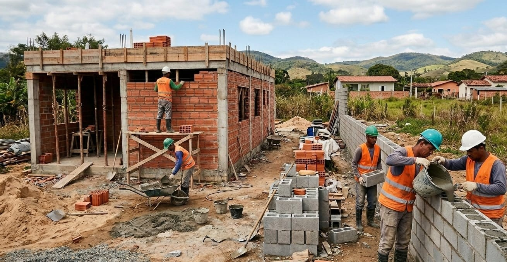

Aplicação da Álgebra Linear na Engenharia Civil para estimar quantitativos de materiais em sistemas construtivos utilizando matrizes e transformações lineares.
Experimentar a aplicaçãoO projeto utiliza um modelo matricial para relacionar as áreas de alvenaria ao consumo de materiais por m². A partir das áreas de alvenaria convencional e estrutural, o modelo determina os quantitativos de argamassa X, argamassa Y e graute Y.

Composta por blocos cerâmicos (o famoso tijolo baiano). Suas paredes exercem exclusivamente a função de vedação e fechamento dos ambientes, pois toda a carga da edificação é suportada pela estrutura principal de pilares, vigas e fundações de concreto armado. No processo construtivo, o assentamento dos tijolos é realizado unicamente com a aplicação de Argamassa X nas juntas horizontais e verticais.
Feita com blocos estruturais específicos cujas próprias paredes servem como estrutura portante, distribuindo os esforços diretamente para a fundação e dispensando o uso de pilares e vigas. A execução ocorre em duas etapas principais: primeiro, faz-se o assentamento dos blocos estruturais utilizando Argamassa Y; posteriormente, realiza-se o grauteamento, onde o Graute Y é vertido da parte superior para a inferior preenchendo as cavidades verticais dos tijolos e cobrindo os vergalhões de aço dispostos em pontos estratégicos da alvenaria.
O cálculo é representado pela Transformação Linear:
Onde:
Transformação Linear ($\mathbb{R}^2 \to \mathbb{R}^3$): O vetor de áreas é transformado em um vetor com o quantitativo de materiais.
Insira os dados de consumo e áreas para realizar a multiplicação matricial: